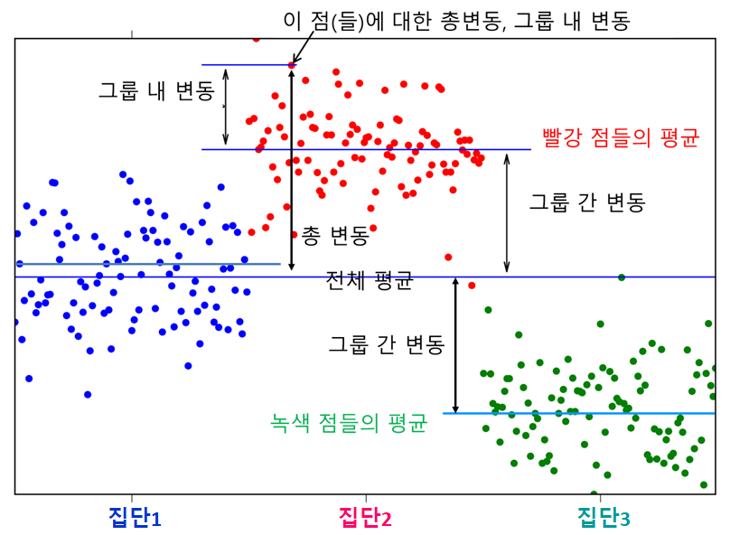
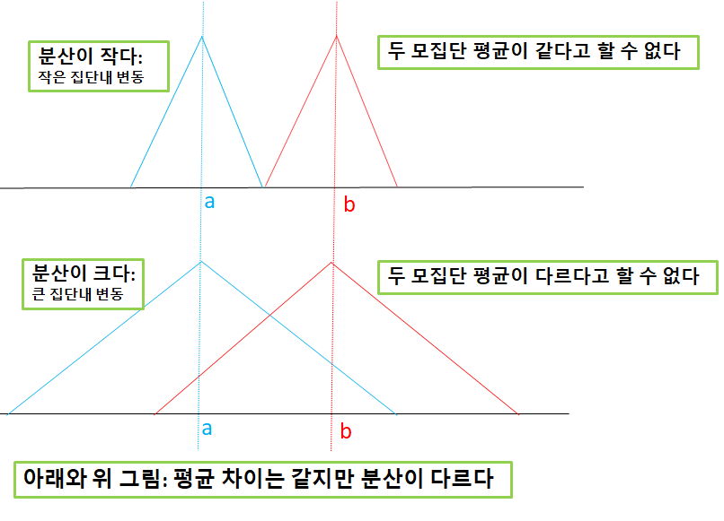

앞에서 두 모집단의 평균 차이를 검정하는데 t 분포를 사용하였습니다. 그런데 두 모집단을 넘어 세 개 이상의 모집단의 평균 차이를 검정하려면 분산을 이용해야 하며 F 분포를 사용합니다. 이때 사용하는 방법이 분산분석 anlaysis of variance 입니다. 집단을 나누는 요인이 독립변수가 되고 비교하는 평균을 계산하는 변수가 종속변수가 됩니다. 독립변수가 하나면 일원분산분석 one-way ANOVA 이고 둘이면 이원분산분석 two-way ANOVA 입니다. 분산분석도 역시 독립변수가 종속변수에 미치는 영향이 있는가를 조사합니다.
분산분석의 가정은 주요한 네 가지가 있습니다.
각 모집단은 정규분포를 이룬다
각 모집단은 동일한 분산을 가진다
표본은 각 모집단에서 무작위로 추출한다
모든 표본은 서로 독립적이다
11.1 일원분산분석
일원분산분석은 집단을 나누는 요인인 독립변수 하나와 비교할 평균을 이루는 종속변수 하나를 갖습니다. 예를 들어, 독립변수가 “전공분야”라고 하고 전공분야는 “미디어” “광고” “저널리즘” 이렇게 세 집단으로 나뉜다고 합시다. 종속변수는 “통계학 점수”로 한다면, 세 집단의 평균이 차이가 있는지 검정하는 것입니다. 총변동, 그룹간 변동, 그룹내 변동, 이 세 가지를 계산하고 비교해서 검정을 합니다.
11.2 변동
총변동 SST; sum of squares total 은 표본 전체의 평균과 각 관찰값의 차이의 제곱합을 말합니다. 독립변수를 고려하지 않았을 때의 변동입니다.
여기에서 \(k\)는 독립변수 안의 집단의 수, \(n_i\)은 각 집단의 관찰값의 수, \(X_{i \cdot}\) 는 \(i\)번째 집단의 평균, \(\bar X_{\cdot \cdot}\)는 표본 전체의 평균. 전체 평균과 집단 평균의 차이는 집단의 속성으로 설명되는 부분이므로 그룹간변동은 독립변수가 설명하는 변동입니다.
그룹내 변동 SSW; sum of squares within groups 은 각 집단의 평균과 그 집단내 관찰값의 차이의 제곱합을 말합니다. 독립변수가 도입되어도 여전히 설명되지 않는 변동입니다.
여기에서 \(k\)는 독립변수 안의 집단의 수, \(n_i\)은 각 집단의 관찰값의 수, \(X_{ij}\) 는 \(i\)번째 집단의 \(j\)번째 관찰값, \(\bar X_{i \cdot}\)는 \(i\)번째 집단의 평균. 집단내의 평균과 관찰값의 차이는 집단의 속성이 설명하지 못하는 부분이라서 오차와 같으므로 SSE로 적기도 합니다.
세 변동의 관계
총변동의 수식을 풀어서 정리하면 그룹간변동과 그룹내변동의 합과 같습니다. 따라서
\[SST= SSB + SSW\]
이것은 회귀분석의 \(SST= SSR + SSE\)와 유사합니다.

Figure 11.1: 총변동, 집단간 변동, 집단내 변동
분산분석표
분산분석을 정리한 표를 분산분석표라고 합니다. 한눈에 분석 결과를 보기에 편합니다.
변동의 원천
변동
자유도
mean squared
\(F\)
\(p\)
그룹간
\(SSB\)
\(k-1\)
\(MSB= \frac{SSB}{k-1}\)
\(\frac{MSB}{MSW}\)
그룹내
\(SSW\)
\(n-k\)
\(MSW=\frac{SSW}{n-k}\)
총합
\(SST\)
\(n-1\)
11.3 평균 차이에 대한 가설 검정
집단간 평균 차이에 대한 가설 검정은 자유도 \((k-1,n-k)\)를 가진 \(F\) 분포를 이용하는데 검정통계량인 F값은 분산분석표에 나오는 것처럼 아래의 공식으로 산출합니다. 각 집단간에 평균 차이가 작을수록 평균들의 분산이 작어져서 분자인 MSB가 작아져서 F 값이 작아질 것이고, 집단내의 분산이 커질수록 집단간 평균 차이가 의미가 없어지는데 이때 분모인 MSW가 커지므로 F 값이 역시 작아집니다. 따라서 F 값이 작을수록 평균의 차이가 작거나 의미가 없다는 것이 되므로 F 값을 가지고 평균 차이를 검정할 수 있습니다.
\[F_0=\frac{MSB}{MSW}\]
또는 한참 앞에서 배웠던 분산 또는 \(F\)의 표집분포와 합동분산으로 설명할 수 있습니다. 위에서 \(F_0\)는 \(H_0\)인 “각 모집단의 분산은 정규 분포를 하고 동일하다”는 가정에 따라 \(F\)값을 산출했다는 의미입니다. 이 가정에 따르면 \(S_{\bar X}^2\)는 \(\sigma_{\bar X}^2\)의 추정량이 됩니다. 즉 집단 평균들의 분산은 모집단 평균의 분산의 추정량이 됩니다. 평균의 표집분포에 따르면, \(\sigma_{\bar X}^2\) = \(\frac{\sigma^2}{n}\)이므로 \(\sigma^2\) 대신 추정량인 \(S_{\bar X}^2\)를 넣으면
\[ \sigma^2의 \; 추정량=n S_{\bar X}^2\]
그런데 위의 방법외에도, 앞의 각 모집단에 대한 가정이 맞다면, 또한 합동분산을 이용해도 \(\sigma^2\)의 추정량을 구할 수 있습니다. \(k\)는 집단의 수, \(S_i^2\)는 \(i\)번째 집단의 분산.
모집단에 대한 가정이 맞다면, 즉 귀무가설이 맞다면 위의 두 방법에 의한 추정량이 근접할 것이고 그렇지 않다면 첫째번 추정량이 둘째보다 더 클 것입니다. 이 둘의 비율은 F 분포를 따르므로 F 값을 구해서 비교해보면 검정을 할 수 있습니다.
\[ F=\frac{ 집단 \; 평균간의 \; 분산을 \; 사용한 \; \sigma^2 \; 추정량}{각 \; 집단내의 \; 분산에 \; 의한 \; \sigma^2 \; 추정량} = \frac{MSB}{MSW}\]

Figure 11.2: 집단내 변동이 평균 차이 검정에 주는 영향
위의 설명을 토대로 아래와 같이 가설검정을 합니다.
가설을 설정한다 \(H_0: \mu_1=\mu_2= \cdots = \mu_k\) 모든 집단의 평균은 동일하다 \(H_A:\)\(\mu_i\) 중 적어도 하나는 다르다
유의수준을 결정한다
검정통계량 F값을 산출한다 (자유도; k-1, n-k)
임곗값과 비교하여 결정한다
Example 11.1
iris 데이터셋에서 Species 변수의 세 품종 간의 Sepal.Length 평균 차이가 있는지 검정하세요.
data(iris)# ANOVA 분석 수행result <-aov(iris$Sepal.Length ~ iris$Species, data = iris)# 분석 결과 출력print(result)
Call:
aov(formula = iris$Sepal.Length ~ iris$Species, data = iris)
Terms:
iris$Species Residuals
Sum of Squares 63.21213 38.95620
Deg. of Freedom 2 147
Residual standard error: 0.5147894
Estimated effects may be unbalanced
summary(result)
Df Sum Sq Mean Sq F value Pr(>F)
iris$Species 2 63.21 31.606 119.3 <2e-16 ***
Residuals 147 38.96 0.265
---
Signif. codes: 0 '***' 0.001 '**' 0.01 '*' 0.05 '.' 0.1 ' ' 1
anova(result)
Analysis of Variance Table
Response: iris$Sepal.Length
Df Sum Sq Mean Sq F value Pr(>F)
iris$Species 2 63.212 31.606 119.26 < 2.2e-16 ***
Residuals 147 38.956 0.265
---
Signif. codes: 0 '***' 0.001 '**' 0.01 '*' 0.05 '.' 0.1 ' ' 1
답: F값이 119.26이고 그에 해당하는 확률 p 0.000 \(\lt\) 0.05 이므로 집단 간에 평균 차이가 없다는 귀무가설을 기각한다. 따라서 집단 간 평균 차이 중에서 적어도 하나는 차이가 있다.
Example 11.2
위의 결과에서 MSB와 SSW는 각각 얼마인가요?
답 MSB=31.606, SSW=38.956
11.4 이원분산분석
분산분석을 정리한 표를 분산분석표라고 합니다. 한눈에 분석 결과를 보기에 편합니다. 모든 셀의 빈도가 두 개 이상이고 동일하다는 가정입니다. 셀당 \(i\) 사례가 있다고 하면 \(abi=n\)
분산분석표
분산 원천
변동
자유도
평균제곱
F
p
요인 A
\(SSA\)
\(a-1\)
\(MSA\)
\(\frac{MSA}{MSE}\)
요인 B
\(SSB\)
\(b-1\)
\(MSB\)
\(\frac{MSB}{MSE}\)
교호작용 AB
\(SSAB\)
\((a-1)(b-1)\)
\(MSAB\)
\(\frac{MSAB}{MSE}\)
집단내
\(SSE\)
\(n-ab\)
\(MSE\)
계
\(SST\)
\(n-1\)
11.5 가설검정
이원분산분석은 행 요인과 열 요인에 관하여 아래의 가설 검정 절차를 각각 시행합니다.
가설을 설정한다 \(H_0: \mu_1=\mu_2= \cdots = \mu_k\) 모든 집단의 평균은 동일하다 \(H_A:\)\(\mu_i\) 중 적어도 하나는 다르다
유의수준을 결정한다
검정통계량 F값을 산출한다 (자유도; k-1, (k-1)(l-1) )
임곗값과 비교하여 결정한다
분산분석의 R 함수는 aov()를 사용합니다. 이원분산분석일 때 관찰수가 다르면 요인을 넣는 순서가 결과에 영향을 줍니다. 앞에 넣을수록 영향이 강하게 나오므로 대게 앞에 통제변인, 뒤에 효과변인을 넣습니다. 교호작용 요인이 들어간다면 가장 뒤에 넣습니다.
data("ToothGrowth")result <-aov(len ~factor(dose) + supp, data = ToothGrowth)# factor(dose); dose가 숫자변수이므로 factor() 함수를 사용해 명목변수로 변경anova(result)
Analysis of Variance Table
Response: len
Df Sum Sq Mean Sq F value Pr(>F)
factor(dose) 2 2426.43 1213.22 82.811 < 2.2e-16 ***
supp 1 205.35 205.35 14.017 0.0004293 ***
Residuals 56 820.43 14.65
---
Signif. codes: 0 '***' 0.001 '**' 0.01 '*' 0.05 '.' 0.1 ' ' 1
답1 두 요인 모두 F값의 확률 p \(\lt\) 0.001 이므로 귀무가설을 기각합니다.
풀이: 교호작용을 고려할 때
data("ToothGrowth")result_inter <-aov(len ~factor(dose) + supp +factor(dose):supp, data = ToothGrowth)# 또는 aov(len ~ factor(dose) * supp, data = ToothGrowth) 로 적어도 된다 # factor(dose); dose가 숫자변수이므로 factor() 함수를 사용해 명목변수로 변경anova(result_inter)
Analysis of Variance Table
Response: len
Df Sum Sq Mean Sq F value Pr(>F)
factor(dose) 2 2426.43 1213.22 92.000 < 2.2e-16 ***
supp 1 205.35 205.35 15.572 0.0002312 ***
factor(dose):supp 2 108.32 54.16 4.107 0.0218603 *
Residuals 54 712.11 13.19
---
Signif. codes: 0 '***' 0.001 '**' 0.01 '*' 0.05 '.' 0.1 ' ' 1
답2 두 요인 모두 F값의 확률 p \(\lt\) 0.001 이므로 귀무가설을 기각합니다. 교호작용 역시 p \(\lt\) 0.05 이므로 len에 영향이 없다는 귀무가설을 기각합니다. 만일 유의수준 \(\alpha=0.01\)이라면 교호작용의 확률인 0.02186은 0.01보다 크므로 귀무가설을 채택합니다. 따라서 교호작용이 len에 영향을 주지 않는다고 결론을 내립니다.
분산분석표를 직접 그리려면
# 앞의 코드청크를 실행해 result_inter 변수를 생성하고 실행한다.result.anova<-anova(result_inter)knitr::kable(result.anova, align ='c', caption ='쥐 이빨 길이 len에 대한 이원분산분석 결과')